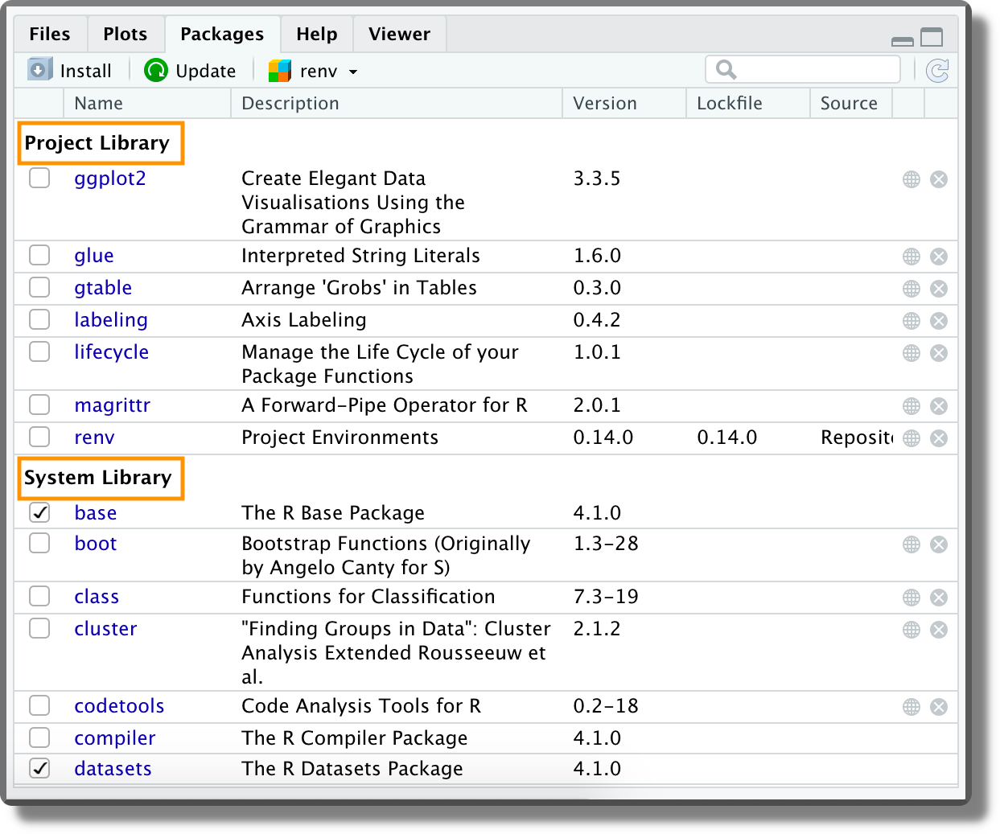
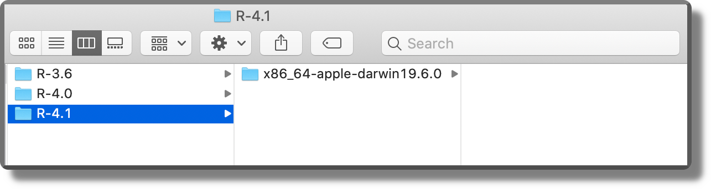
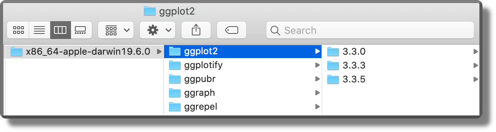
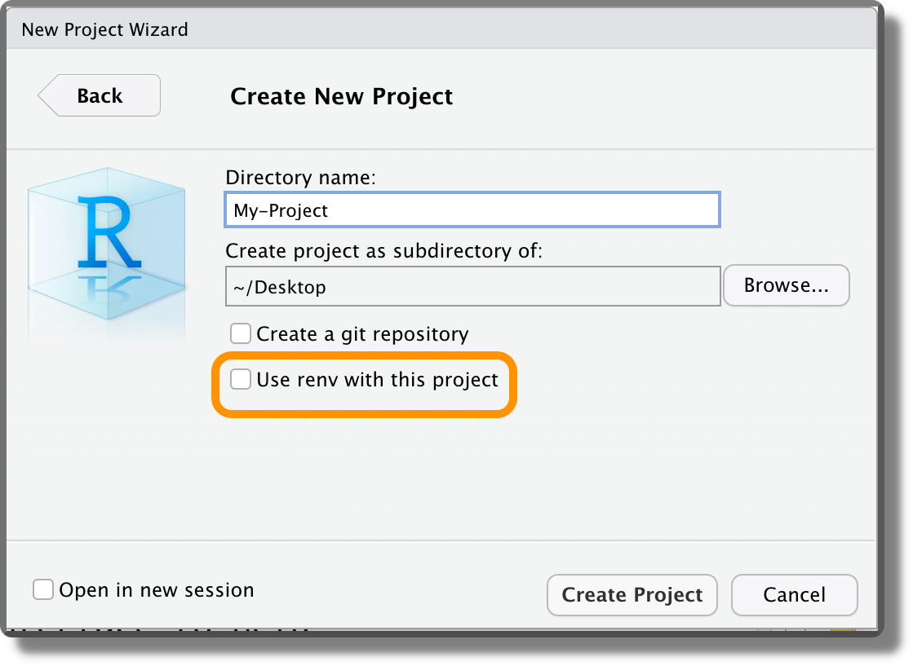
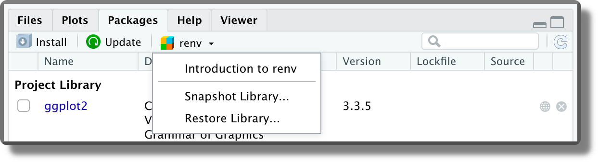
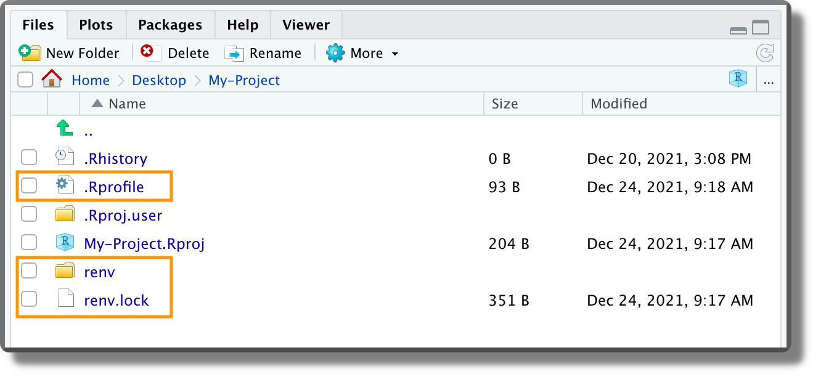
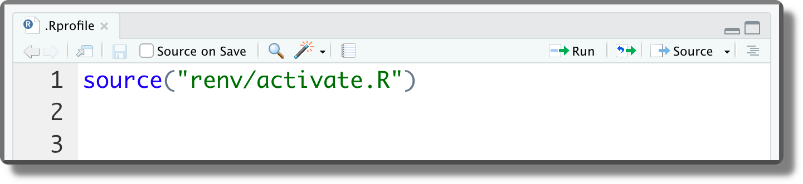
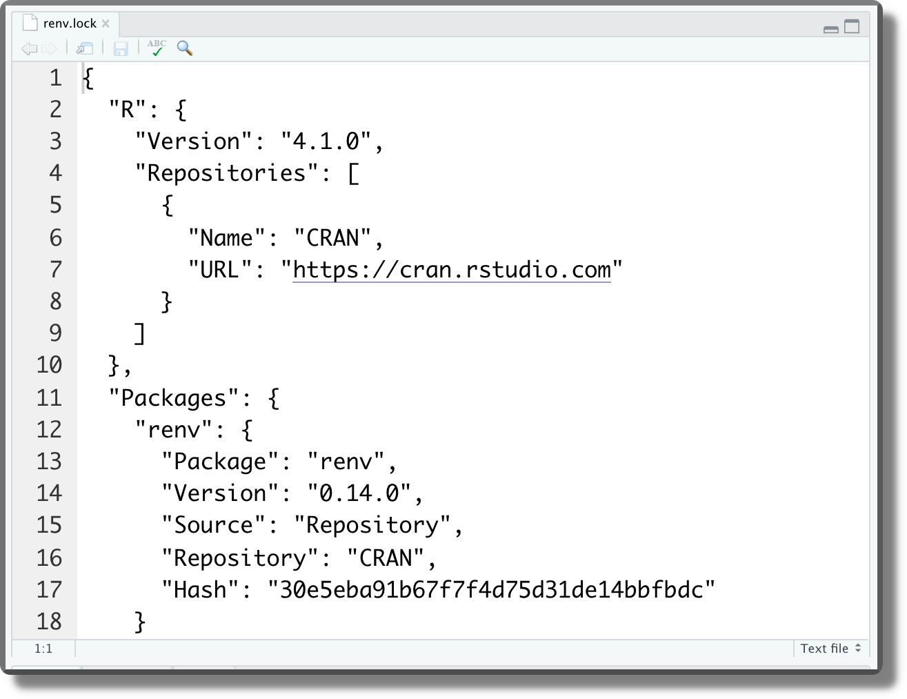
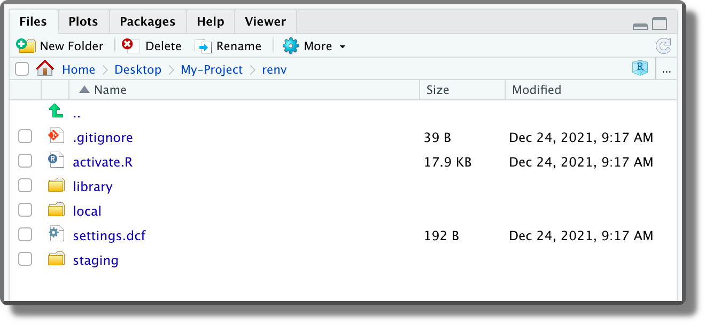

Chapter 11 Requirements
In the previous chapters, we learned to organize all our files and data in a well structured and documented repository. Moreover, we learned to use Git and GitHub for tracking changes and managing collaboration during the development of our project. Finally, we introduced dedicated tools for managing the analysis workflow pipeline and for creating dynamic documents.
To guarantee the reproducibility of the results, however, it is not enough to automatize the analysis execution, but we also need to satisfy all project requirements. Ideally, the analysis should be reproduced using the same settings and configuration as in the original analysis. This means that system prerequisites, specific software, and required libraries all should match the specific project requirements.
In this chapter, we discuss how to manage our project requirements. In Chapter [TODO: add ref], instead, we introduce Docker and the container technology that allows us to create and share an isolated, controlled, standardized environment for our project. The Holy Grail of reproducibility.
11.1 Project Requirements and Installation
We need to provide a clear description of the project requirements and how to install them. As described in Chapter 3.1.1.5, we can create a section in the project README named “Requirements”, with all the project requirements, and another section named “Installation”, with step-by-step instructions on how to get our project ready on someone else’s machine.
11.1.1 Requirements
Let’s discuss project requirements. Of course, these are just general indications that have to be adapted according to the specific project aims and needs.
11.1.1.1 System Prerequisites
A project may require some specific system prerequisites. For example, a minimum GPU memory may be required for computationally intensive processes or the project could be based on a specific Operating System. In this case, it is important to list all the system requirements.
System prerequisites are common in the case of applications or software. In most research projects, however, there are no specific system prerequisites. Nevertheless, it could be useful to list the system characteristics (e.g., Operating System and CPU details) of the machine used to obtain the original results. Of course, in this case, it should be highlighted that these are not requirements but only the machine characteristics used in the original analysis. This information may be useful in the case of inexplicable reproducibility issues.
11.1.1.2 Software
The most important thing, surely, is to list all the software required for the project. These can be our favourite programming language for statistical analysis (e.g., R, Python, or Julia), software to create documents (e.g., LATEX or Pandoc), specific compilers (e.g., Clang or GCC) or other software for any particular needs.
Note that it is not enough to indicate only the name of the software, but is also necessary to specify the exact software version. Most software is actively developed and new versions are regularly released. Usually, new versions bring some new features or some bugs are fixed. In the case of major releases, however, changes are so important that backward compatibility is no longer guaranteed. This means that our old code may no longer work using the new software versions. Specifying the required software version allows for avoiding these issues.
Software version numbers usually have three components major.minor.patch (e.g. R version 4.1.2). New version number is decided according to the actual changes made:
- Patch. When some bugs are fixed but no new feature is added, the
patchvalue is incremented (e.g. R version 4.1.3). - Minor Release. When a new feature is added (with or without bug fixes), the
minorvalue is incremented (e.g. R version 4.2.0). - Major Release. When changes affect backward compatibility, the
majorvalue is incremented (e.g. R version 5.0.0).
Note that, in the case of a minor or a major release, all previous values are set to zero. For example, if the current version is 2.1.11, with a new minor release we obtain 2.2.0 and with a new major release 3.0.0.
In the case of a development version the .9000 arbitrary suffix is added (e.g., 2.1.11.9000).
11.1.1.3 Libraries
Finally, most of the currently popular programming languages for statistical analysis rely on multiple libraries to implement several features. Also, these libraries are regularly updated and their backward compatibility may be compromised. Therefore, it is necessary to list all the required libraries with their exact versions.
The number of required libraries can grow quite large very easily. For this reason, listing all of them in the README file may not be the best solution. Alternatively, we could list all the libraries in another file in our project. For example, we can create a requirements.txt file with each library name and version. Ideally, this file should be structured smartly to allow other colleagues to automatically retrieve the required information to install the libraries using some function. For example, the requirements.txt file can be structured as follows.
library_1==x.xx.xx
library_2==x.xx.xx
...In this way, using regular expressions (for a tutorial on regular expressions see https://ryanstutorials.net/regular-expressions-tutorial/) library name and version can be easily retrieved and used to install all the dependencies.
In the README file, we should still point to the requirements.txt file providing relevant indications on how to use it and how to install the required libraries. We could also provide a custom function to automate this process. However, major programming languages already provide ad-hoc solutions to manage project dependencies easily and automatically. In Section 11.2, we describe how to manage dependencies in R (for Python, see https://pip.pypa.io/en/stable/user_guide/#requirements-files and https://www.geeksforgeeks.org/pipenv-python-package-management-tool ).
11.1.2 Installation
Most projects do not need special installation procedures. We simply need to make sure we have the right version of the software for the statistical analyses. Next, we download the project repository, install all the required libraries and we are ready to run the analysis. This is a very common workflow that requires a minimal set of instructions. We can reasonably assume that other colleagues already know how to install popular statistical software. Therefore, we usually specify only how to download the project and how to install the required libraries.
In other cases, however, our project may need unusual software or require specific installation options and configuration settings (e.g., exporting environment variables). In these cases, a detailed step-by-step description of the installation procedure is needed. Remember, we should always provide enough information to allow other colleagues to install our project and get ready for the analysis.
Note that installation instructions should also take into account possible differences due to different operating systems and how to solve possible common issues. In this regard, links to external documentation (e.g., official software documentation or troubleshooting help pages) could be very helpful. Keep in mind that the issues we have found when developing our project are likely to be the same issues other colleagues will stumble on.
For an example of complex install documentation, see Jekyll documentation on GitHub (https://docs.github.com/en/pages/setting-up-a-github-pages-site-with-jekyll/testing-your-github-pages-site-locally-with-jekyll) or RStan documentation (https://github.com/stan-dev/rstan/wiki/RStan-Getting-Started).
An alternative approach is to create a bash script (e.g., install.sh) to automate the whole installation procedure or some part of it. We introduced the use of the terminal and bash command language in Chapter 6.
Doing this will require a lot of hard work. We have to deal with lots of possible complications. However, it will allow other colleagues to install our project simply by running the install.sh script. A very elegant solution.
11.2 R Dependencies
In this section, we focus on the usual requirements to take into account when using R. We start considering the R version and related installed software. Next, we discuss the R package ecosystem.
11.2.1 R version
The first thing to take into account is the actual R version used in the project. This is particularly relevant as, on the 24th of April 2020 (curiously, the birthday of one of the book authors), R 4.0.0 was released introducing several new features that were not available before. Moreover, as for any major release, backward compatibility is not guaranteed. Thus, guess what?\(\ldots\)Code working on the old 3.6.x versions may fail (or give surprisingly different results) if run on the new 4.x.x. versions. For these reasons, it is important to use the exact required R version.
We can check our current R version (plus other system info) by running the command version (without parenthesis, it is an object, not a function; see ?version for further details).
version
## _
## platform x86_64-apple-darwin17.0
## arch x86_64
## os darwin17.0
## system x86_64, darwin17.0
## status
## major 4
## minor 1.2
## year 2021
## month 11
## day 01
## svn rev 81115
## language R
## version.string R version 4.1.2 (2021-11-01)
## nickname Bird HippieInfo-Box: R Release Updates To know the new feature introduced in R 4.0.0 see https://www.r-bloggers.com/2020/04/r-4-0-0-now-available-and-a-look-back-at-rs-history/
To know the new feature introduced in R 4.1.0 see https://www.r-bloggers.com/2021/05/new-features-in-r-4-1-0/
For all the other R release news updates see https://cran.r-project.org/doc/manuals/r-release/NEWS.html
11.2.1.1 Multiple R versions
It is possible to install multiple versions of R side by side on our machine. These are stored in separate directories with their own independent libraries. In this case, we need to select the desired version of R to run. To do that in RStudio, follow the official documentation https://support.rstudio.com/hc/en-us/articles/200486138-Changing-R-versions-for-the-RStudio-Desktop-IDE.
An alternative solution is to use Docker (see Chapter [TODO: add ref]). Docker allows us to create isolated, controlled environments in which we can install the required version of R.
11.2.2 R packages
The R packages ecosystem changes quite rapidly, new packages are released every month and already available packages are updated from time to time. New package versions can solve bugs, add new functions, or introduce new features. At the same time, old functions can be deprecated or removed from the package itself. This means that in a year or two, our code may fail due to some changes in the underlying dependencies. To avoid this issue it is important to ensure that we install the same package versions used in the original analysis.
We can obtain a list of the packages used in the project and their version number using the function sessioninfo::session_info(). In the example below, we limited the number of packages displayed (usually quite long). See ?sessioninfo::session_info() for all the options and output details.
sessioninfo::session_info()## ─ Session info ───────────────────────────────────────────────────────────────────────────────────────────────────────────────────────────────────────────────────────────────────────────────────────
## setting value
## version R version 4.1.2 (2021-11-01)
## os macOS Big Sur 10.16
## system x86_64, darwin17.0
## ui X11
## language (EN)
## collate en_US.UTF-8
## ctype en_US.UTF-8
## tz Europe/Rome
## date 2022-04-24
## pandoc 2.14.0.3 @ /Applications/RStudio.app/Contents/MacOS/pandoc/ (via rmarkdown)
##
## ─ Packages ───────────────────────────────────────────────────────────────────────────────────────────────────────────────────────────────────────────────────────────────────────────────────────────
## ! package * version date (UTC) lib source
## ggplot2 * 3.3.5 2021-06-25 [2] CRAN (R 4.1.0)
## renv 0.15.4 2022-03-03 [1] CRAN (R 4.1.2)
## rmarkdown 2.13 2022-03-10 [2] CRAN (R 4.1.2)
## tidyverse * 1.3.1 2021-04-15 [2] CRAN (R 4.1.0)
## P trackdown 1.1.1 2021-12-19 [?] CRAN (R 4.1.0)
##
## [1] /Users/claudio/Library/Caches/org.R-project.R/R/renv/library/manual-open-science-dc92818e/R-4.1/x86_64-apple-darwin17.0
## [2] /Library/Frameworks/R.framework/Versions/4.1/Resources/library
##
## P ── Loaded and on-disk path mismatch.
##
## ─ Python configuration ───────────────────────────────────────────────────────────────────────────────────────────────────────────────────────────────────────────────────────────────────────────────
## python: /usr/local/bin/python3
## libpython: /usr/local/opt/python@3.9/Frameworks/Python.framework/Versions/3.9/lib/python3.9/config-3.9-darwin/libpython3.9.dylib
## pythonhome: /usr/local/Cellar/python@3.9/3.9.12/Frameworks/Python.framework/Versions/3.9:/usr/local/Cellar/python@3.9/3.9.12/Frameworks/Python.framework/Versions/3.9
## version: 3.9.12 (main, Mar 26 2022, 15:51:15) [Clang 13.1.6 (clang-1316.0.21.2)]
## numpy: /usr/local/lib/python3.9/site-packages/numpy
## numpy_version: 1.22.3
##
## python versions found:
## /usr/local/bin/python3
## /usr/bin/python3
## /usr/bin/python
##
## ──────────────────────────────────────────────────────────────────────────────────────────────────────────────────────────────────────────────────────────────────────────────────────────────────────This output provides all the main information about the R session to reproduce the original results. We can save it as an object or print it in the project README or another file. Saving it as an object is particularly helpful as it can be later used to automatically install all project dependencies with some custom function.
However, as different package versions may be required in different projects, we will need to reinstall the packages each time we move from one project to another. This would be very annoying. Fortunately, in R there is always a package to solve our problems. COncerning package management, the answer is renv.
11.3 renv a Package to Rule Them All
The idea behind renv (successor of packrat) is to create an isolated, portable, and reproducible environment for our projects. Using renv, we can easily manage the dependencies of all our projects in a very smooth workflow. In the next sections, we introduce the main features of renv, how to use the renv workflow in our project and some other more advanced aspects.
This should be enough to get started, however, we highly encourage everyone to take a tour of renv official documentation available at https://rstudio.github.io/renv/. There are many more aspects to learn and solutions for possible issues.
11.3.1 Introduction to renv
Using renv, each project will have its own dedicated library. In this way, we can install different versions of the same package in different projects avoiding any conflict.
Looking at the package panel we can note that there are two different libraries:
- Project Library. The specific packages installed within a given project. This library is unique for each project.
- System Library. The base packages that are automatically installed with R. This library is common to all projects. To be more precise, this library is common to all projects based on the same R version. Different R versions have their own system library.

This subdivision allows us to easily manage our project packages without affecting other projects’ dependencies.
Moreover, using renv we can easily save the state of a project’s R package dependencies. In renv terms, we get a snapshot of the currently installed packages and their versions. Other colleagues can later use this snapshot to install the specific package versions restoring the same project dependencies.
We may think that installing the same package over and over in multiple projects may be a waste of time and space. Actually, renv works through a very efficient global cache system that is shared across all projects. Therefore, when the same package is used in different projects, the package is installed only the first time. In future installations, renv will simply link to the already installed package in the cache system, resulting in a much faster process and saving disk space.
Again, renv is a very useful package with lots of features and options to account for any specific need. See the official documentation for all the details https://rstudio.github.io/renv.
By default, renv generates its cache in the following directories:
| Platform | Location |
|---|---|
| Linux | ~/.local/share/renv |
| macOS | ~/Library/Application Support/renv |
| Windows | %LOCALAPPDATA%/renv |
Within the cache directory, renv organizes all packages according to the actual R version and actual platform used. This allows minimizing chances of incompatibility due to different machine or package compilation procedures.

Finally, for each package, multiple versions are saved side by side. A very efficient and reliable organization. See the official documentation for further details about cache settings (https://rstudio.github.io/renv/articles/renv.html#cache).

11.3.2 The renv workflow
Let’s see now how to get started with renv:
- Init. We can activate
renvin our project directly when creating a new project by selecting “Use renv with this project” (see Chapter 3.2.1). 
Alternatively, we can use renv::init() to enable renv in an already existing project. Once activated, renv automatically discovers all the packages currently used and creates the project private library. Moreover, any time we open a project that uses renv a message is displayed in the console to confirm the project library is loaded.
<img src="images/requirements/renv-active.png" width="60%" style="display: block; margin: auto;" />- Install Packages. Now we can proceed as usual installing the required packages for our project or removing them if no longer used.
- Snapshot. When required, use the function
renv::snapshot()to save the state of a project’s R package dependencies. All information regarding the version of R and R packages is automatically saved in a file namedrenv.lock. - Restore. Other colleagues can use the function
renv::restore()to automatically install all the required packages according to therenv.lockfile. We can also userenv::restore()to revert to a previously encoded state if newly installed packages introduce some unexpected problems.
Alternatively, it is also possible to manage the renv workflow using the menu in the package panel. However, command lines are usually preferred because they allow us to easily define specific options.

11.3.3 Advanced Features
Now we discuss some advanced features of renv.
11.3.3.1 Reproducibility Issues
The renv workflow is very intuitive. We take a snapshot of the project’s R package dependencies that can later be used by other colleagues to restore the same dependencies on their machines. Note, however, that renv does not solve all problems of reproducibility. In the first place, renv records the version of R but can not automatically install the required version, it only prompts a warning message:
## Warning: Project requested R version '3.6.1' but '4.1.0' is currently being usedMoreover, other factors can affect the reproducibility of the results (e.g., operating system, system libraries, or the compiler). See https://rstudio.github.io/renv/articles/renv.html#caveats for detailed discussion. Most of these limits can be overcome using Docker (see Chapter [TODO: add ref]).
11.3.3.2 renv Files
When renv is activated in a project, the following different files are created at the project root:

.Rprofile. The following line is added to the.Rprofileto activaterenveach time we work on the project. If for some reason we want to remove momentarilyrenv, we can simply comment out this code line. renv.lock. The file with the saved version of R and R packages. This file is formatted as JSON. It is a good practice to track this file with Git (see Chapter 7). Here is an example of therenv.lockfile. renv/. Directory with all the files used byrenv. In particular,.gitignorespecifies the files that should not be tracked by Git;activate.Ris the actual script used to activaterenveach time we work on the project;settings.dfccontainsrenvproject setting (see?renv::settingsfor further details);library/contains the link to the cached packages. 
Again, for all the details, features and options, see the official documentation https://rstudio.github.io/renv.
11.3.3.3 Snapshot Types
We can choose different strategies to manage dependencies setting the type argument of renv::snapshot() function:
"all": Capture all packages within the active R libraries. This may also include undesired packages."implicit"(default): Capture only packages which appear to be used in our project."explicit": Capture only packages listed in the projectDESCRIPTIONfile (see Chapter 5.2.2.3)."custom": Use a custom user-defined filter instead.
We can also define renv project-specific settings using the renv project settings mechanism (?renv::settings). Further details are presented in the official documentation, see https://rstudio.github.io/renv/reference/snapshot.html.
11.3.3.4 Detecting Packages
Using the default settings (i.e., "implicit"), renv captures in the renv.lock file only the packages which appear to be used in our project. However, renv may fail to discover some dependencies or packages loaded indirectly (see https://rstudio.github.io/renv/articles/faq.html#why-isn-t-my-package-being-snapshotted-into-the-lockfile-).
# Correctly detected by renv
library("tidyverse")
trackdown::upload_file(...)
# Not detected by renv
packages_list <- c("tidyverse", "trackdown")
lapply(packages_list, library, character.only = TRUE)
for (package in packages_list) {
library(package, character.only = TRUE)
}To overcome this issue, we can list these packages directly in the DESCRIPTION file.
11.3.3.5 .renvignore File
On the contrary, if we want to exclude specific files, we can list them in the .renvignore files. Listed files are not considered to discover dependencies. The same syntax as for .gitignore files is used.
11.3.3.6 Restore Issue
Finally, from personal experience, it may happen that renv::restore() fails at the first few attempts. Usually, this is due to some missing dependencies.
In some cases, these dependencies were installed during the restore process but, for unexpected reasons, they are not found by other packages. Re-running renv::restore() a second (or a third) time will usually solve the problem and the restore process is completed successfully.
In other cases, if these dependencies are missing from the renv.lock file we have to install them manually. Hopefully, these are not relevant dependencies and so not having the exact package version will not compromise reproducibility.
11.3.3.7 Extra {-s}
- Regular expressions tutorial
https://ryanstutorials.net/regular-expressions-tutorial/
R
- Release Updates
https://cran.r-project.org/doc/manuals/r-release/NEWS.html - RStudio select R version
https://support.rstudio.com/hc/en-us/articles/200486138-Changing-R-versions-for-the-RStudio-Desktop-IDE
renv
- Official documentation
https://rstudio.github.io/renv/ - Caching system
https://rstudio.github.io/renv/articles/renv.html#cache - Reproducibility limits
https://rstudio.github.io/renv/articles/renv.html#caveats - Snapshot
https://rstudio.github.io/renv/reference/snapshot.html - Snapshot packages
https://rstudio.github.io/renv/articles/faq.html#why-isn-t-my-package-being-snapshotted-into-the-lockfile-